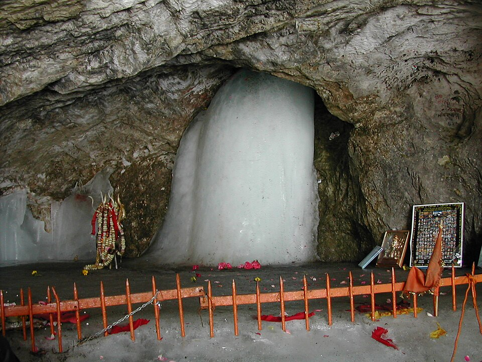
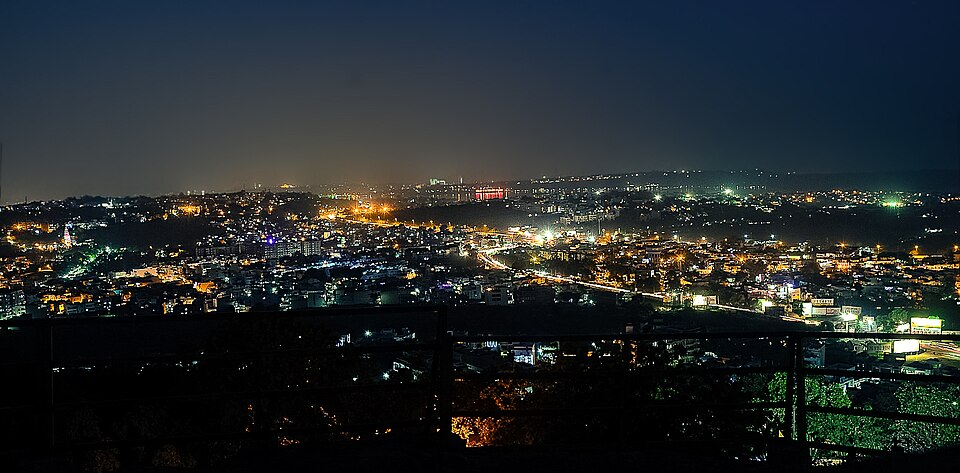

पुतिन, ट्रंप और जिनपिंग की शेनझेन बैठक को रूस ने बताया ऐतिहासिक
रूस ने पुतिन, ट्रंप और जिनपिंग की त्रिपक्षीय बैठक को वैश्विक राजनीति में बदलाव का संकेत बताया है। हालांकि, इस बीच यूक्रेन पर रूसी हमले जारी हैं और शांति दावों पर सवाल उठ रहे हैं।
ताज़ा ख़बरें
 राष्ट्रीय
राष्ट्रीयवाराणसी के नमो घाट पर 'भजन क्लबिंग' का आयोजन, पीएम मोदी ने की युवाओं के उत्साह की सराहना
वाराणसी के नमो घाट पर चार दिवसीय गंगा महोत्सव के दौरान 'भजन क्लबिंग' का आयोजन किया गया। आधुनिक बीट्स पर पारंपरिक भजनों के इस कार्यक्रम में युवाओं ने भारी उत्साह दिखाया, जिसकी प्रधानमंत्री नरेंद्र मोदी ने सराहना की है।

राष्ट्रीयअमरनाथ यात्रा मार्ग का 85 प्रतिशत हिस्सा भूस्खलन के प्रति संवेदनशील, शोध में खुलासा
नेशनल इंस्टिट्यूट ऑफ़ हाइड्रोलॉजी के अध्ययन के मुताबिक अमरनाथ यात्रा का 85 प्रतिशत मार्ग भूस्खलन के लिहाज से संवेदनशील है। शोधकर्ताओं ने बड़े हादसों से बचने के लिए सुरक्षा पुख्ता करने की सिफारिश की है।
 राष्ट्रीय
राष्ट्रीयउत्तर प्रदेश शिक्षा सेवा चयन आयोग ने स्पेशल TET का रिजल्ट किया घोषित
उत्तर प्रदेश शिक्षा सेवा चयन आयोग ने विशेष शिक्षक पात्रता परीक्षा (स्पेशल टीईटी) का परिणाम जारी कर दिया है, जिसमें प्राथमिक स्तर पर 15,159 और उच्च प्राथमिक स्तर पर 23,743 अभ्यर्थी सफल हुए हैं।
खेलएशियन गेम्स की मेडलिस्ट शॉट पुट खिलाड़ी किरण बालियान पर डोपिंग के चलते 8 साल का प्रतिबंध
एशियन गेम्स 2022 की ब्रॉन्ज मेडलिस्ट भारतीय शॉट पुट खिलाड़ी किरण बालियान को डोपिंग नियमों के उल्लंघन और सैंपल से छेड़छाड़ का दोषी पाए जाने पर 8 साल के लिए प्रतिबंधित कर दिया गया है।
 राष्ट्रीय
राष्ट्रीयप्रधानमंत्री नरेंद्र मोदी आज तीन राज्यों के दौरे पर, बंगाल, बिहार और यूपी को मिलेगी सौगात
प्रधानमंत्री नरेंद्र मोदी शनिवार को पश्चिम बंगाल, बिहार और उत्तर प्रदेश का दौरा करेंगे। इस दौरान वह आईआईटी खड़गपुर के समारोह में शामिल होने के साथ ही बिहार में हजारों करोड़ की विकास परियोजनाओं की आधारशिला रखेंगे और लखनऊ में दीक्षांत समारोह में हिस्सा लेंगे।
 राष्ट्रीय
राष्ट्रीयराजस्थान पंचायत चुनाव: कांग्रेस ने भाजपा को पछाड़कर दर्ज की बड़ी जीत
राजस्थान पंचायत चुनाव में कांग्रेस ने सत्तारूढ़ भाजपा को पीछे छोड़ते हुए पंचायत समिति और जिला परिषद सीटों पर स्पष्ट बढ़त हासिल की है। राज्य निर्वाचन आयोग ने यह आंकड़े जारी किए हैं।
 राष्ट्रीय
राष्ट्रीयकर्नाटक में बाइक टैक्सी सेवाओं को सुप्रीम कोर्ट से राहत, सरकार की याचिका खारिज
सुप्रीम कोर्ट ने कर्नाटक में बाइक टैक्सी सेवाओं को मंजूरी देने वाले हाईकोर्ट के फैसले को बरकरार रखा है। कोर्ट ने राज्य सरकार की विशेष अनुमति याचिका खारिज करते हुए कहा कि मोटरसाइकिलें भी परिवहन वाहन हो सकती हैं।

राष्ट्रीयभोपाल में 12 दिसंबर को INDIA ब्लॉक की रैली, राहुल और अखिलेश होंगे शामिल
भोपाल में 12 दिसंबर को INDIA ब्लॉक की एक विशाल रैली आयोजित की जाएगी। इस कार्यक्रम में कांग्रेस नेता राहुल गांधी, प्रियंका गांधी वाड्रा और सपा प्रमुख अखिलेश यादव एक ही मंच पर नजर आएंगे।
 अंतरराष्ट्रीय
अंतरराष्ट्रीयडोनाल्ड ट्रंप ने भारत की 7% जीडीपी वृद्धि और कम ब्याज दरों की सराहना की
अमेरिकी राष्ट्रपति डोनाल्ड ट्रंप ने भारत की आर्थिक प्रगति की तारीफ करते हुए कहा कि कम ब्याज दरों और 7% जीडीपी वृद्धि जैसे रुख से अमेरिका भी 20% तक विकास दर हासिल कर सकता है।
राष्ट्रीयमिशन 2027: यूपी की सभी 403 सीटों पर महिला विस्तारक उतारेगी बीजेपी
उत्तर प्रदेश विधानसभा चुनाव 2027 को लेकर बीजेपी ने महिला वोट बैंक पर फोकस बढ़ाया है। आठ राज्यों से बुलाई गई 403 महिला विस्तारक प्रदेश की सभी सीटों पर घर-घर जाकर संवाद करेंगी।
राष्ट्रीयहैदराबाद में मेटा ऑफिस के बाहर यूथ कांग्रेस का प्रदर्शन
हैदराबाद में यूथ कांग्रेस कार्यकर्ताओं ने मेटा कार्यालय के बाहर प्रदर्शन कर नेताओं के इंस्टाग्राम अकाउंट सस्पेंड किए जाने का विरोध किया।
राष्ट्रीयहैदराबाद में मेटा कार्यालय पर यूथ कांग्रेस का प्रदर्शन, अकाउंट सस्पेंड होने से था आक्रोश
कांग्रेस नेताओं के सोशल मीडिया अकाउंट सस्पेंड होने के विरोध में यूथ कांग्रेस के कार्यकर्ताओं ने हैदराबाद में मेटा कार्यालय के बाहर प्रदर्शन किया और अंदर घुसने का प्रयास किया।
अंतरराष्ट्रीयपॉप सिंगर टेलर स्विफ्ट को दादा साहब फाल्के इंटरनेशनल फिल्म फेस्टिवल अवार्ड
पॉप गायिका टेलर स्विफ्ट को वर्ष 2026 के दादा साहब फाल्के इंटरनेशनल फिल्म फेस्टिवल अवार्ड्स में इंटरनेशनल आर्टिस्ट ऑफ द ईयर के रूप में चुना गया है।
 अंतरराष्ट्रीय
अंतरराष्ट्रीयसिंधु जल संधि पर भारत का रुख स्पष्ट, विदेश मंत्रालय ने कहा- कोई बदलाव नहीं
पाकिस्तान के मंत्री मुसादिक मसूद मलिक के नई दिल्ली दौरे के बीच विदेश मंत्रालय ने स्पष्ट किया है कि 1960 की सिंधु जल संधि पर भारत के रुख में कोई बदलाव नहीं आया है।
अंतरराष्ट्रीयअमृतसर के निखिल गुप्ता को अमेरिकी अदालत ने सुनाई 19 साल से अधिक की सजा
अमेरिका में सिख अलगाववादी गुरपतवंत सिंह पन्नू की हत्या की साजिश रचने के मामले में भारतीय नागरिक निखिल गुप्ता को अमेरिकी संघीय अदालत ने 235 महीने यानी 19 साल से अधिक की सजा सुनाई है।
 राष्ट्रीय
राष्ट्रीयपहलगाम आतंकी हमला: गोप्रो कैमरे की सप्लाई चेन पर चीन से जवाब का इंतजार
पहलगाम हमले में बरामद गोप्रो कैमरे की सप्लाई चेन को लेकर एनआईए ने चीन से जानकारी मांगी है, लेकिन अब तक कोई जवाब नहीं मिला है। जांच एजेंसी यह पता लगा रही है कि कैमरा चीनी डिस्ट्रीब्यूटर से लश्कर तक कैसे पहुंचा।
व्यापारटाटा समूह की एयर इंडिया को हुआ ₹22,000 करोड़ से अधिक का घाटा
वित्त वर्ष 2025-26 में एयर इंडिया को भारी वित्तीय घाटा हुआ है। ईंधन की बढ़ती कीमतों और पाकिस्तानी एयरस्पेस पर पाबंदियों के कारण परिचालन लागत में बढ़ोतरी इसकी मुख्य वजहें बताई गई हैं।
 व्यापार
व्यापारईपीएफओ ने रिटायरमेंट के बाद पीएफ से मासिक निकासी की दी मंजूरी
कर्मचारी भविष्य निधि संगठन ने रिटायरमेंट के बाद पीएफ की पूरी रकम एक साथ निकालने के बजाय किस्तों में हासिल करने की सिस्टमैटिक विड्रॉल प्लान सुविधा को मंजूरी दी है।
राष्ट्रीयसलमान ख़ान ने बिग बॉस 20 में शर्ट उतारने को बताया तात्कालिक फैसला
अभिनेता सलमान ख़ान ने एक कार्यक्रम में कहा कि 'बिग बॉस 20' के दौरान उनका शर्ट उतारना एक तात्कालिक निर्णय था। उन्होंने सोशल मीडिया पर बढ़ती नकारात्मकता और ट्रोल्स की आलोचना भी की।
 खेल
खेलएशिया कप राइजिंग स्टार्स: भारत ने नेपाल को 306 रन से हराया
भारत ने एशिया कप राइजिंग स्टार्स 2026 के अपने पहले मुकाबले में नेपाल को 306 रन के बड़े अंतर से मात दी। नेपाल की पूरी टीम महज 26 रन पर सिमट गई।
 राष्ट्रीय
राष्ट्रीयदिल्ली के IGI एयरपोर्ट के आसपास ड्रोन और लेजर लाइट पर 60 दिन का प्रतिबंध
दिल्ली पुलिस ने इंदिरा गांधी इंटरनेशनल एयरपोर्ट के आसपास सुरक्षा और विमानों की आवाजाही को ध्यान में रखते हुए ड्रोन, पैराग्लाइडर और लेजर लाइट के इस्तेमाल पर 60 दिनों के लिए रोक लगा दी है।
राष्ट्रीयसलमान खान ने अपनी मातृभूमि के मज़ाक उड़ने पर ट्रोलर्स को दिया करारा जवाब
अभिनेता सलमान खान ने सोशल मीडिया पर अपनी मातृभूमि के मज़ाक उड़ाए जाने और वीएफएक्स के इस्तेमाल के दावों पर तीखा जवाब दिया है। उन्होंने कहा कि वे 4 दिसंबर को पूरी फिल्म दिखाएंगे।
व्यापारअनन्या बिड़ला ने 'कॉफ़ी विद करण' में अपनी निजी ज़िंदगी और कारोबार पर की बात
प्रमुख उद्योगपति कुमार मंगलम बिड़ला की बेटी अनन्या बिड़ला ने हाल ही में एक टॉक शो के दौरान अपने बिज़नेस सफ़र, शादी के प्रस्तावों और परिवार में पितृसत्ता को लेकर खुलकर चर्चा की।
 व्यापार
व्यापारएंथ्रोपिक के आईपीओ के बाद भारतीय मूल के सीएफओ कृष्णा राव बने अरबपति
आर्टिफिशियल इंटेलिजेंस कंपनी एंथ्रोपिक के शेयर बाजार में उतरने के बाद भारतीय मूल के सीएफओ कृष्णा राव की कुल संपत्ति में बड़ा इजाफा हुआ, जिससे वे कुछ समय के लिए अरबपति बन गए।
राष्ट्रीयगाना विवाद में फंसे सलमान खान, सोना महापात्रा ने लगाया शहीदों के अपमान का आरोप
बॉलीवुड अभिनेता सलमान खान अपनी आगामी फिल्म मातृभूमि के एक गाने को लेकर विवादों में आ गए हैं। गायिका सोना महापात्रा ने गाने के बोल पर शहीदों के अपमान का आरोप लगाया है।
टेकबजाज ने लॉन्च की नई पल्सर आरएस200, जानिए कीमत और फीचर्स
बजाज ऑटो ने अपनी पल्सर आरएस200 बाइक को नए अपडेट के साथ बाजार में उतारा है। इसमें इलेक्ट्रॉनिक थ्रॉटल बॉडी, राइडिंग मोड्स और टीएफटी डिस्प्ले जैसे फीचर्स दिए गए हैं।
 राष्ट्रीय
राष्ट्रीयसुप्रीम कोर्ट ने कर्नाटक में बाइक टैक्सी सेवाओं को दी अनुमति, राज्य सरकार की याचिका खारिज
सुप्रीम कोर्ट ने कर्नाटक में बाइक टैक्सी के संचालन की अनुमति दे दी है। अदालत ने राज्य सरकार की अपील को खारिज करते हुए कहा कि यह किफायती और सुलभ परिवहन का साधन है।
 अंतरराष्ट्रीय
अंतरराष्ट्रीयएससीओ फोरम में सीमा पार आतंकवाद के सवाल पर अटके पाकिस्तानी मंत्री
नई दिल्ली में आयोजित एससीओ सिविलिज़ेशनल डायलॉग फोरम में भाग लेने आए पाकिस्तान के मंत्री मुसादिक मलिक से जब सीमा पार आतंकवाद पर सवाल पूछा गया, तो वे सीधे जवाब देने से बचते नजर आए।
राष्ट्रीयजनसंख्या नियंत्रण कानून बने, दो से अधिक बच्चों वालों को न मिले सरकारी लाभ: रामदेव
योग गुरु बाबा रामदेव ने देश में कड़े जनसंख्या नियंत्रण कानून की मांग उठाई है। उन्होंने दो से अधिक बच्चे पैदा करने वाले परिवारों को सभी सरकारी सुविधाओं से वंचित करने का सुझाव दिया है।
 खेल
खेलराइजिंग स्टार्स एशिया कप: तिलक वर्मा और कुमार कुशाग्र के शतकों से मजबूत स्थिति में इंडिया ए
राइजिंग स्टार्स एशिया कप में नेपाल के खिलाफ मुकाबले में इंडिया ए के कप्तान तिलक वर्मा और कुमार कुशाग्र ने शानदार शतक जड़े। शुरुआती झटकों के बाद दोनों बल्लेबाजों ने टीम को संभाला।
राष्ट्रीयउत्तर प्रदेश के मुख्यमंत्री योगी आदित्यनाथ की मां सावित्री देवी का निधन
उत्तर प्रदेश के मुख्यमंत्री योगी आदित्यनाथ की मां सावित्री देवी का 91 वर्ष की आयु में निधन हो गया है। प्रधानमंत्री नरेंद्र मोदी समेत कई दिग्गजों ने शोक जताया है।
अंतरराष्ट्रीयनेपाल के प्रधानमंत्री बालेन शाह 22 और 23 नवंबर को आएंगे भारत दौरे पर
नेपाल के प्रधानमंत्री बालेन शाह प्रधानमंत्री नरेंद्र मोदी के निमंत्रण पर 22 और 23 नवंबर को भारत की आधिकारिक यात्रा पर रहेंगे। जानकारों का कहना है कि इस दौरे पर कूटनीतिक हलकों की विशेष नजर है।
टेकभुवन बाम की लोकप्रिय कॉमेडी सीरीज ढिंढोरा का दूसरा सीजन नेटफ्लिक्स पर रिलीज
भुवन बाम की चर्चित कॉमेडी सीरीज ढिंढोरा का दूसरा सीजन पांच साल के अंतराल के बाद नेटफ्लिक्स पर रिलीज हो गया है। सीरीज में इस बार टीटू मामा ₹11 करोड़ के नुकसान से जूझते नजर आ रहे हैं।
राष्ट्रीयघरों की बची और एक्सपायरी दवाएं सहेजने के लिए शुरू हुआ मेडसाइकिल अभियान
युवाओं द्वारा शुरू किए गए मेडसाइकिल अभियान के तहत अब तक 173 किलो बची हुई दवाइयां जरूरतमंदों तक पहुंचाई गई हैं, जबकि 527 किलो एक्सपायरी दवाओं को सुरक्षित तरीके से नष्ट किया गया है।
 अंतरराष्ट्रीय
अंतरराष्ट्रीयभारत सरकार ने पाकिस्तानी मंत्री मुसादिक मलिक को निजामुद्दीन दरगाह जाने की अनुमति नहीं दी
एससीओ सम्मेलन में शामिल होने दिल्ली आए पाकिस्तान के जलवायु मंत्री मुसादिक मलिक को केंद्र सरकार ने हजरत निजामुद्दीन दरगाह जाने की अनुमति नहीं दी है, हालांकि वह आगरा ताजमहल जा सकेंगे।
राष्ट्रीयबेंगलुरु में पिता ने बेटे की हत्या की, पत्नी को भी बनाया बंधक
बेंगलुरु के पद्मनाभनगर में आपसी शक के चलते एक पिता ने अपने 18 वर्षीय बेटे की हत्या कर दी और पत्नी को चार दिन तक कमरे में बंद रखा। पुलिस ने आरोपी को गिरफ्तार कर लिया है।
व्यापारयूरोप की प्रमुख एयरलाइन लुफ्थांसा 1,000 कर्मचारियों की करेगी छंटनी
बढ़ती ईंधन लागत और वित्तीय दबाव के बीच यूरोप की सबसे बड़ी एविएशन कंपनी लुफ्थांसा ने अपने करीब 1,000 कर्मचारियों की छंटनी करने का फैसला किया है।
 राष्ट्रीय
राष्ट्रीयब्रिटिश मैगजीन की रिपोर्ट में भारत के पास 32 राफेल होने का दावा, पूर्व वायुसेना अधिकारी ने नकारा
ब्रिटिश एविएशन मैगजीन की एक रिपोर्ट में भारत के पास 36 की बजाय 32 सक्रिय राफेल होने का दावा किया गया है। पूर्व वायुसेना उप प्रमुख एयर मार्शल एन. तिवारी ने इन आंकड़ों को गलत बताया है।
 राष्ट्रीय
राष्ट्रीयउत्तर प्रदेश चुनाव: आज़म ख़ान ने असदुद्दीन ओवैसी के बयानों पर कसा तंज़
जेल से रिहाई के बाद समाजवादी पार्टी के नेता आज़म ख़ान ने एआईएमआईएम प्रमुख असदुद्दीन ओवैसी पर निशाना साधा है। उन्होंने कहा कि दाढ़ी रखने से कोई मौलाना नहीं बनता।